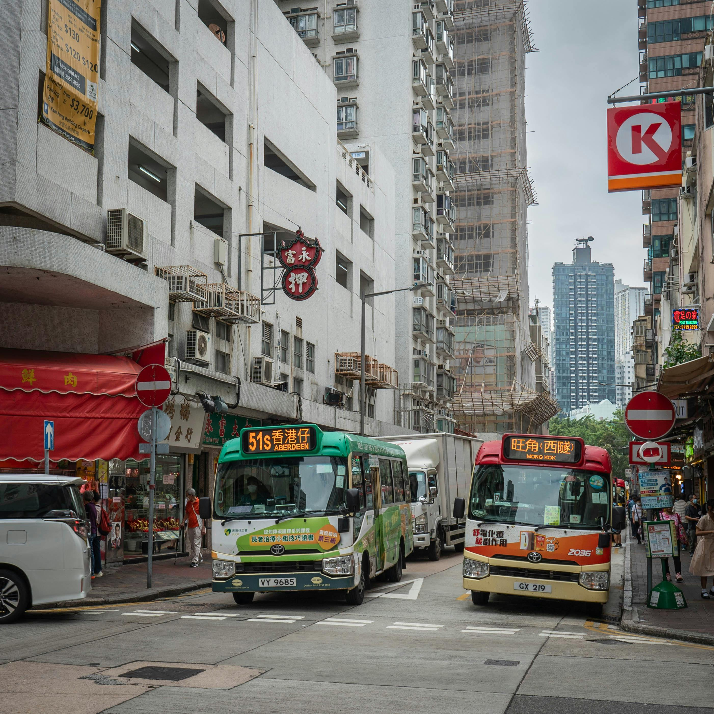

Leve
Estacionarse en un lugar prohibido. 12 Feb 2022Dejar el vehículo en zonas no permitidas, como aceras o frente a hidrantes.
Foto de pascal claivaz: https://www.pexels.com/es-es/foto/estados-unidos-rascacielos-245584/
Grave
Exceder los límites de velocidad. 12 Feb 2022Conducir más rápido de lo permitido en una vía.
Foto de Saya Kimura: https://www.pexels.com/es-es/foto/personas-que-cruzan-en-carril-peatonal-en-la-ciudad-durante-el-dia-123007/

Grave
No respetar una señal de alto. 12 Feb 2022Ignorar una señal de alto o ceda el paso.
Foto de aboodi vesakaran: https://www.pexels.com/es-es/foto/coches-carretera-trafico-calle-18435551/
Muy grave
Ignorar una orden de un oficial de tránsito. 12 Feb 2022No obedecer las indicaciones de un agente de tráfico.
Foto de WENCHENG JIANG: https://www.pexels.com/es-es/foto/ciudad-coches-carretera-trafico-7210063/

Leve
No detenerse completamente en un señalamiento de alto. 12 Feb 2022No parar por completo en una intersección con señal de alto.
Foto de saw sing: https://www.pexels.com/es-es/foto/ciudad-trafico-calle-edificios-19230510/
Muy grave
Causar un accidente fatal. 12 Feb 2022Ser responsable de un choque mortal.
Foto de Oleg Prachuk: https://www.pexels.com/es-es/foto/nieve-nevar-ciudad-coches-8077860/

Leve
No usar el cinturón de seguridad. 12 Feb 2022No abrocharse el cinturón mientras se conduce.
Foto de Juliana Polizel: https://www.pexels.com/es-es/foto/carretera-trafico-niebla-neblina-5668906/
Muy grave
Conducir bajo la influencia del alcohol o drogas. 12 Feb 2022Manejar estando intoxicado.
Foto de Barnabas Davoti: https://www.pexels.com/es-es/foto/coches-carretera-trafico-vehiculo-8842185/
Grave
Conducir sin licencia válida. 12 Feb 2022Operar un vehículo sin tener una licencia de conducir válida.
Foto de Nishant Aneja: https://www.pexels.com/es-es/foto/carreras-de-coches-naranja-con-conos-de-trafico-como-barreras-2416484/